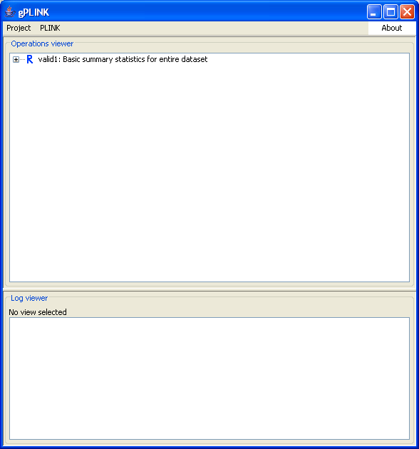

|  |
PLINK is runningAfter clicking Run on the previous dialog, you are returned to the main gPLINK screen. The blue R indicates that this PLINK command is still running. You can close gPLINK and re-open it -- it will not affect the PLINK job or jobs that are running in the background (i.e. often the PLINK jobs can take a long time). In this particular case we are running PLINK remotely -- the above still holds if PLINK is running locally. (Except of course you can not turn off your machine if PLINK is running locally in the background...)Previous | Next |